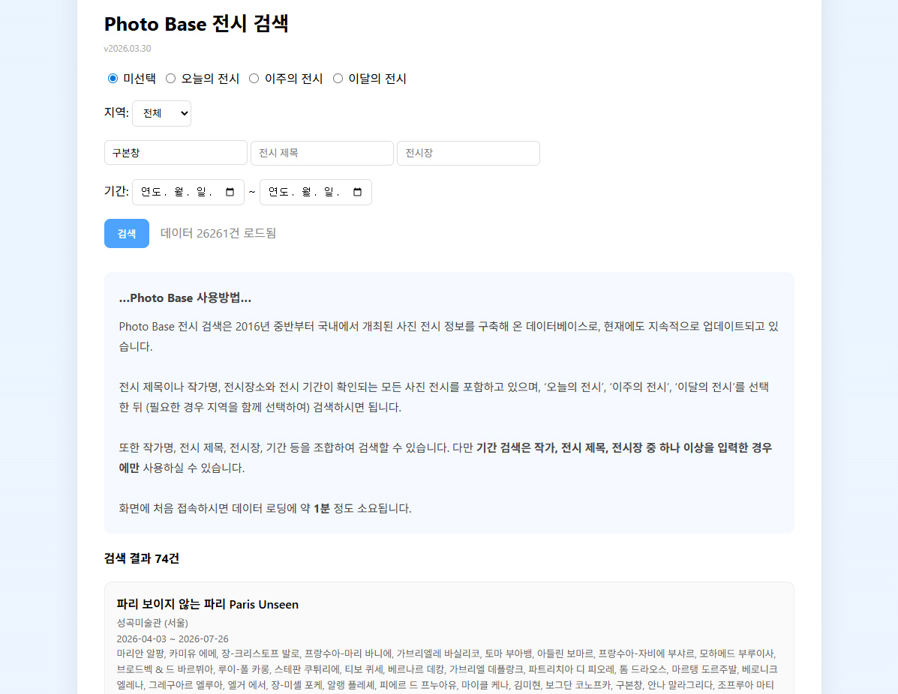

Photo Base 소개
2026.02.13

Photo Base – 사진 전시 정보 검색 시스템
Photo Base는 국내 사진 전시 정보를 검색할 수 있는 데이터베이스 시스템입니다.
지난 약 10년 동안 국내에서 진행되는 사진 전시 정보를 꾸준히 수집하여 데이터베이스로 구축해 왔습니다. 그동안 이 자료는 제 블로그에서 ‘2026년 2월 3주차 사진전시 일정 (2/15~2/21)’과 같은 형태로 매주 전시 일정으로 정리하여 공개해 왔습니다.
이번에는 그동안 축적된 데이터를 보다 효과적으로 활용할 수 있도록 Photo Base라는 이름의 전시 검색 시스템을 제작하여 공개하게 되었습니다.
Photo Base 데이터베이스
Photo Base는 2016년 중반부터 국내에서 개최된 사진 전시 정보를 기반으로 구축된 데이터베이스입니다. 현재도 지속적으로 업데이트되고 있습니다.
데이터베이스에는 다음과 같은 정보가 포함됩니다.
- 전시 제목
- 작가 이름
- 전시장
- 전시 기간
전시 제목이나 작가명, 전시장소, 전시 기간 등이 확인되는 모든 사진 전시를 가능한 범위 내에서 포함하고 있습니다.
검색 방법
Photo Base에서는 다음과 같은 방식으로 전시를 검색할 수 있습니다.
- 오늘의 전시
- 이주의 전시
- 이달의 전시
필요한 경우 지역을 함께 선택하여 검색할 수 있습니다.
또한 다음과 같은 항목을 조합하여 보다 구체적인 검색이 가능합니다.
- 작가 이름
- 전시 제목
- 전시장
- 전시 기간
다만 기간 검색은 작가명, 전시 제목, 전시장 중 하나 이상의 항목을 입력한 경우에만 사용할 수 있습니다.
사용 안내
Photo Base에 처음 접속하면 데이터 로딩에 약 20~30초 정도가 소요될 수 있습니다.
검색 버튼 옆에 ‘데이터 불러오는 중...’이라는 표시가 나타나는 동안에는 검색이 실행되지 않습니다. 잠시 기다리면 검색 버튼이 활성화되며 정상적으로 검색을 이용할 수 있습니다.
Photo Base는 웹 브라우저와 휴대폰에서 모두 이용할 수 있습니다.